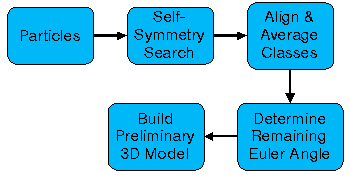
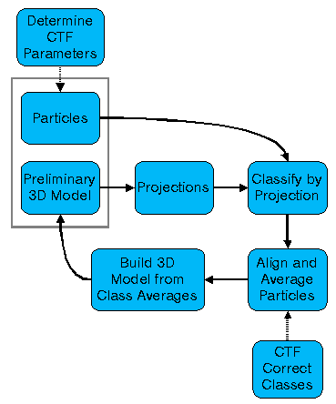

Reconstruction Flowchart
Note: This flowchart is designed to show you how EMAN processes data,
not to teach you how to use it. If you'd like to learn how to do a reconstruction,
follow the customized 4 step reconstruction process provided by eman
Click on a flowchart element for details.
Generate Initial Model
(particles with at least 3-fold rotational symmetry)

Refine 3D model

Last Modified: